Τύποι καλωδίων

SATA Cable
Χρησιμοποιείται για σύνδεση σκληρών δίσκων και SSD με τη μητρική πλακέτα.
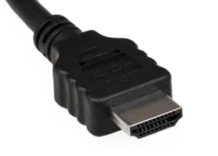
HDMI
Χρησιμοποιείται για τη σύνδεση οθονών και τηλεοράσεων, υποστηρίζει ήχο και εικόνα υψηλής ανάλυσης.
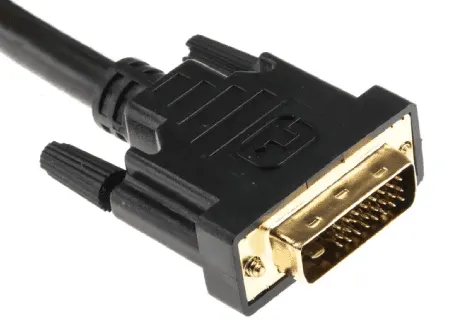
DVI
Παλιότερο καλώδιο για σύνδεση οθονών. Υπάρχουν τύποι DVI-D (ψηφιακό) και DVI-I (ψηφιακό και αναλογικό).
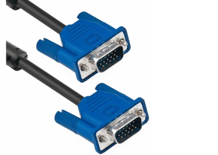
VGA
Αναλογικό καλώδιο που χρησιμοποιείται για παλιότερες οθόνες.
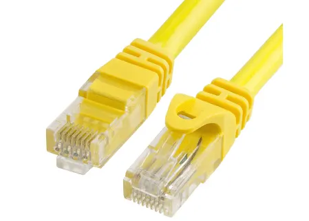
Ethernet Cable
Χρησιμοποιείται για τη σύνδεση υπολογιστών σε τοπικά δίκτυα (LAN).
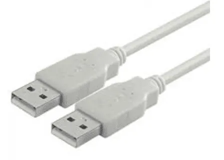
USB Type-A
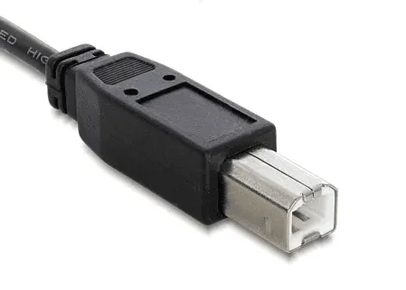
USB Type-B
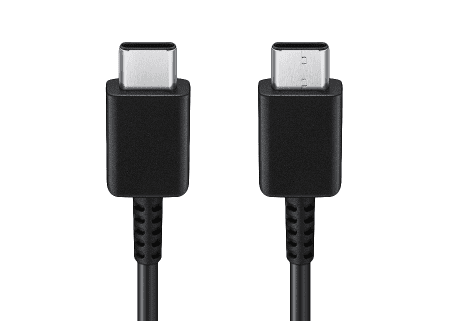
USB Type-C
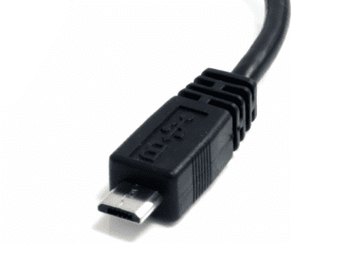
Micro USB
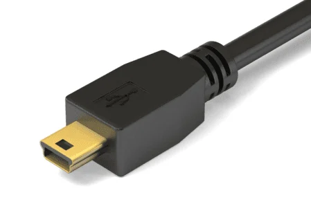
Mini USB
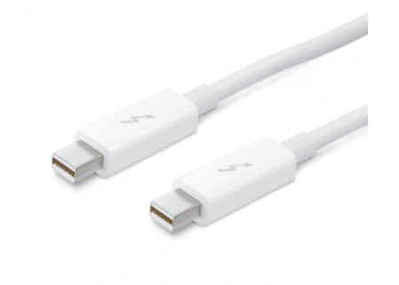
Thunderbolt Cable
Χρησιμοποιείται για τη σύνδεση υψηλής ταχύτητας περιφερειακών συσκευών και οθονών.
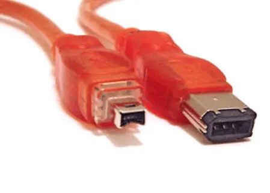
FireWire (IEEE 1394)
Παλιότερη τεχνολογία που χρησιμοποιούνταν για τη σύνδεση εξωτερικών σκληρών δίσκων και άλλων συσκευών, έχει σχεδόν αντικατασταθεί από το USB.
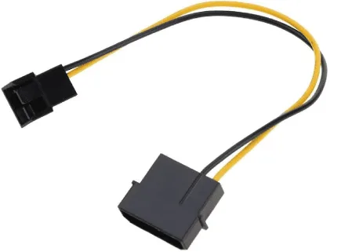
CPU Cooler Cable
Χρησιμοποιείται για τη σύνδεση της ψύκτρας της CPU στη μητρική πλακέτα.
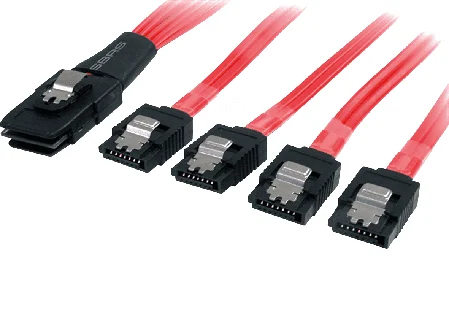
SAS Cable
Χρησιμοποιείται σε Server για τη σύνδεση δίσκων με υψηλές ταχύτητες.